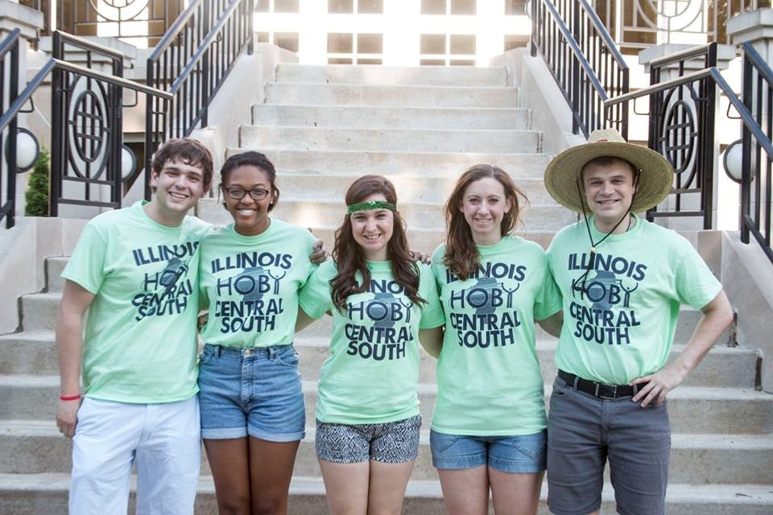

Kaitlin Monahan's Web Portfolio
This site was created to showcase the projects completed during my time in the Spring 2018 semester of IS_LT 7361 Introduction to Digital Media. The projects shown here include:
images, audio, and video. All photos, videos, and audio tracks are original, with the exception of the audio used during the audio project itself. All rights
to that song belong to the composer, Andrew G.
"This course teaches students about Web-based digital media (images, audio, and video). It also shows how to display media on the Internet and provides a foundation for more
advanced courses in digital media and Web development offered in SISLT."
--Taken from the Course Syllabus.
About Me:
Hi Everyone! I graduated with a bachelor's in math (minor in secondary education) from Saint Mary's College of Notre Dame in 2015 and am in my 3rd year teaching math at LaSalle-Peru High School in the northern half of central IL :). This is my second semester working towards my master's in Technology in Schools. Along with teaching, I have also coached the scholastic bowl and math teams and volunteer with HOBY. HOBY is an international organization that hosts leadership seminars for high school sophomores every summer, and for the past 3 years I have worked as the Director of Ambassador Relations and Registration.